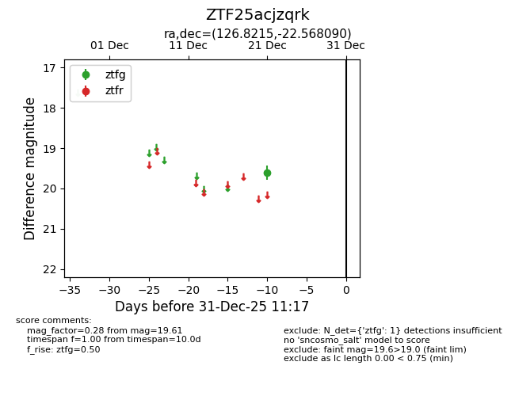
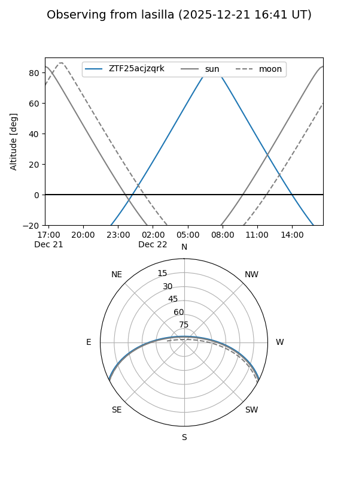
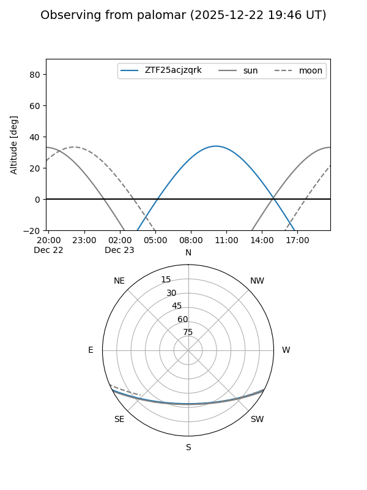

ZTF25acjzqrk
Target ZTF25acjzqrk at 2025-12-21 11:33
Aliases and brokers:
FINK: fink-portal.org/ZTF25acjzqrk
Lasair: lasair-ztf.lsst.ac.uk/objects/ZTF25acjzqrk
ALeRCE: alerce.online/object/ZTF25acjzqrk
alt names
ZTF25acjzqrk (ztf,fink_ztf)
Coordinates:
equatorial (ra, dec) = 126.8215,-22.56809
equatorial (HMS+DMS) = 08:27:17.16,-22:34:05.13
galactic (l, b) = (244.2075,+9.13583)
Flags:
Photometry:
last ztfg=19.61
1 ztfg detections
Lightcurve

Visibility


Additional plots